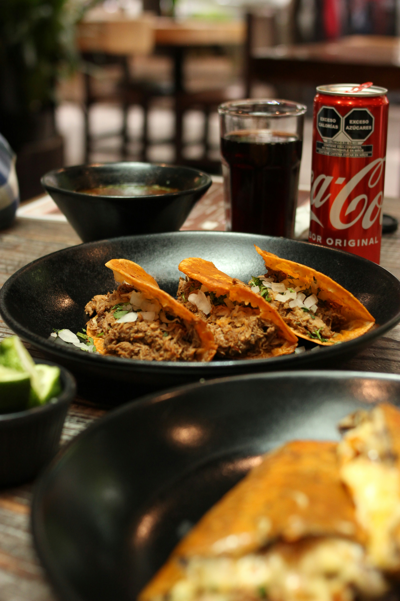

Birria Tacos

Description
Birria, a.k.a. tacos de birria, is a Mexican dish of meat (usually goat or
beef) stewed in its braising liquid until it reaches a melt-in-your-mouth
texture. Traditionally, it gets its flavor from dried chile peppers. Birria
can be served alone as a stew or on corn tortillas.
These restaurant-worthy birria tacos are crispy on the outside, yet incredibly
tender and juicy on the inside? What's not to love about this top-rated tacos
de birria recipe?
Ingredients
-
Dried chile peppers: Dried guajillo chile peppers, chile de arbol peppers,
and ancho chiles
- Beef chuck roast
-
Seasonings: You'll need salt, pepper, fresh garlic, whole cloves, cinnamon,
cumin, thyme, marjoram, and oregano
- Olive oil
- Tomatoes
- Vinegar
- Tortillas
- Onion
- Cilantro
Steps
-
Boil the dried peppers for 5 minutes, then remove from heat and let the
peppers soak until the water is cool. Drain, reserving some water.
- Season the beef and sear on all sides in oil in a Dutch oven.
- Grill the tomatoes until the skin is blistered and begins to peel.
-
Blend the soaked chili peppers with the reserved chile water, tomatoes,
vinegar, and seasonings.
-
Strain the sauce and pour over the meat. Cover the Dutch oven and cook until
the meat begins to fall apart, basting often. Allow the meat to rest, then
shred.
-
Warm the tortillas on the griddle. Fill each tortilla with meat, onions, and
cilantro.